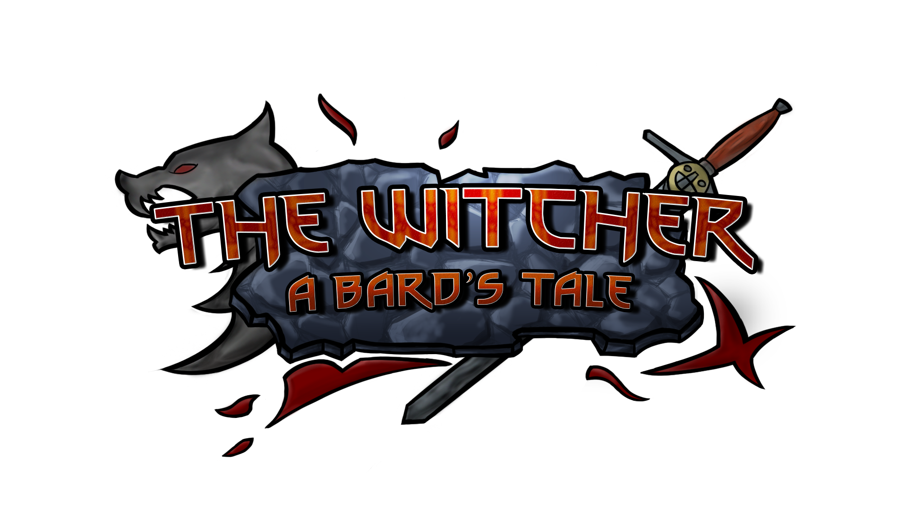
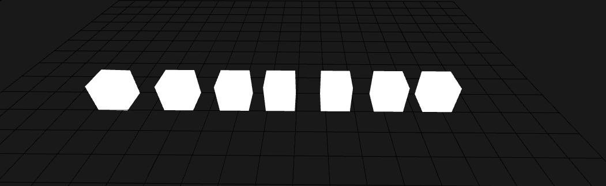
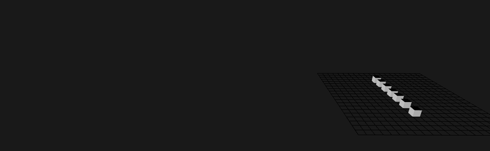
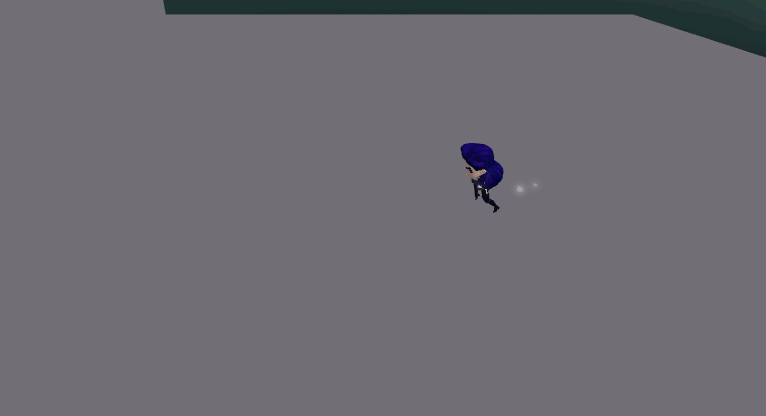
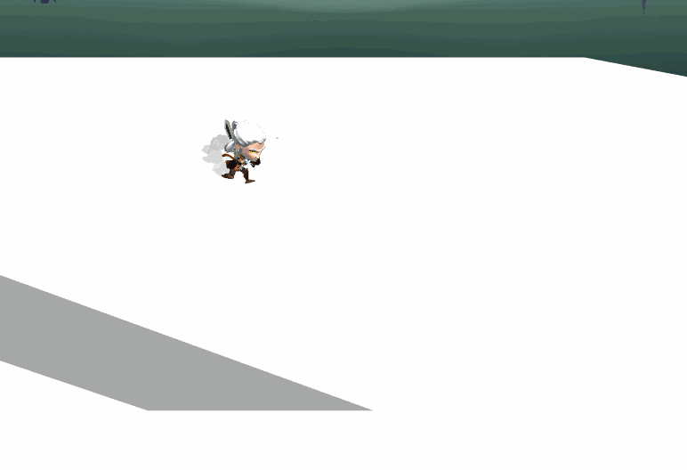
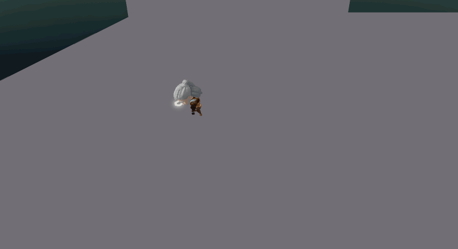
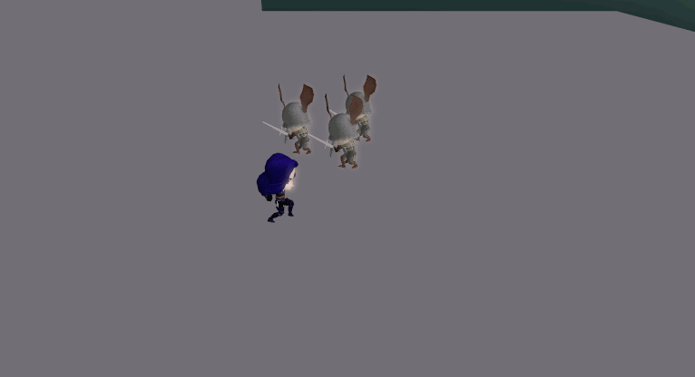
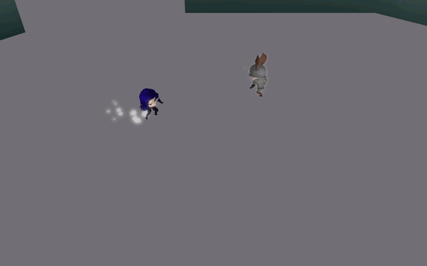
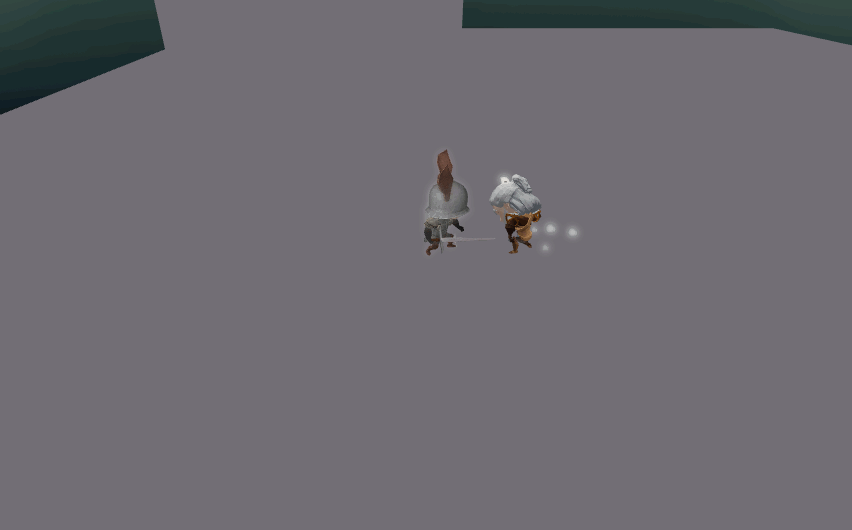

The Witcher: A Bard's Tale
The Witcher: A Bard's Tale is a Beat 'em up and Hack and Slash cooperative adventure game, where the players
take the role of Geralt the Rivia and Yennefer of Vengerberg, on their quest to rescue Ciri.
Each character has its own set of combos and spells, making each one have a unique playstyle. Also, the players can find relics during the game, which will improve existing combos with new powerful abilities like burn or stun!
The game features two unique bosses, over 5 different kinds of enemies, each one with a different behaviour and three different maps to fight in

This game was made with my college class for the subject "Project 3" of the Bachelor's Degree in Video Game Design and Development at the UPC. The team was made of 37 students of the 3rd year of university.
I've worked on many projects before this, but this was the first time with such a big team. Coordination was hard and we had very tight deliveries, but overall the game came out amazing and I am really proud of the work we all did.
Also, a very important note, this game was all made with a Game Engine made by us, the students.
My contribution
At the start of the project, I worked on the Animation Module of our Engine, but quickly moved to Gameplay programming, focusing on the Characters, since it's my favorite thing to program in a videogame. I believe that I've gained a great amount of experience programming and also working in a big team thanks to this project.
Engine
In relation with the Engine we used worked, I worked with a colleague named Marc to implement the Animation Module. In this module I worked on the following features:
- Importer: I worked on importing the animations and rigs, creating the resource and meta files and saving it in Binary on the Library of the Engine.
- DeformableMesh: A component which has assigned a root bone and links the whole skeleton with the meshes it has to affect for the skinning.
- Animation Clips: Made a simple clip cutter so we can split an imported animation file into multiple clips to use each on its own.

I've also worked with another colleague, Alex Morales, to implement what we called Anim Tween. A simple module which allows different types of transformations of a GameObject such as color, size, position in a set period of time. All of these can have a different type of curves to obtain the exact effect required.

Gameplay
Character State Machine
At the start of the project, a simple State Machine based on a enum was developed for the character, but we quickly realized that it had bad scalability and would make us repeat code. To fix these problems, I changed from Enum State Machine to a Hierarchical State Machine, which encapsulated the different states of the characters effectively and helped us scale the functionalities of each state.
Character Movement
After working on the Hierarchical State Machine rework, I started improving the character movement that was done before. I added acceleration and slow to the dodge, and had to rework most of the basic movement since during the development of the project, the Physics Module was changed and I had to redo the movement.

Also, there was a problem with the movement when going down a slope, since it was made accelerating forward, it would go in the air, fall down, move forward, go into the air again, fall down over and over when going down a slope. I had to make a Raycast from the feet of the player to detect the surface the character was on and then calculate the slope of it to adapt the movement on that direction.
In relation with the movement, I also implemented a set of sphere collider inside the feet of the character which triggers a footstep sound every time it collider with a ground surface, taking in count the material its made of(stone, sand, wood, etc).
Character Combat
I worked on programming all the inputs and actions the character can do in combat, and all the different features that affect the attacks. The combat is based on two differnt types of attacks, Spells and Combo Attacks, both share some small features but work on a different way.
Combos
To create the combos of the characters, I based the structure on a simple State Machine of Attacks. Each Attack would be a node with its own information of damage and effects, and also would point to the other Attacks it can link to. With this structure we easily created new Attacks and made them link to each other with the input we wanted to.

Spells
For the structure of the Spells, I wanted to creatd something that could have good scalability and also potential to generate a great diversity of spells. I created a system based on Tags, on which a spell can have a different amount of tags making it behave in a way or another.
- AOE: this tag makes the spell hit with a marked area of effect.
- Chaining: this tag makes the spell chain to nerby enemies of the first enemy hit.
- Buff: this tag makes the spell apply an effect to the allies it hit.
- Debuff: this tag makes the spell apply a debuff/negative effect to the enemies it hits.
- Trap: this converts the spell into a trap, making it be an area on the ground on which the enemy has to enter to receive the hit/effect of the spell
- Projectile: this converts the spell into a projectile
With these structure I was able to create all the spells of each character efficiently and allowed the designers to tweak them easily.

Small Features
I worked on different small features for all the attacks to improve the feel and flow of the combat.
- Interruption and Timing: all attacks can be interrupted with a jump or dodge before and after the collider of the attack has been activated.
- Snapping: we can set an attack to have a snapping distance, which works as an auto-aim of the attack, to help the player attack the enemy they desire.
- Impulse: an attack can have a set impulse, to improve the feeling of a powerful attack, making the character move with it.
- Hit Freeze: this makes the player and the enemy freeze for a set amount of time when a hit connect, improving the feeling of the attack.
- KnockBack: we can set a knockback direction and force to each attack, so we can have attacks that knock enemies on the air, back or even pull them towards the character.
- Collider Sleection and Update: allows the selection of differnt types of colliders like a sphere, box or a collider which moves with the weapon of the character and make them change during the attack.
- Impact Sound: each attack can impact a surface and it will trigger an impact sound depending on the type of surface(sand, mud, stone).
Yennefer
This character requires it's own section in this page because I wokred designing the character combos with my colleague Alejandro Paris and personally implemented all of her attacks, spells and dodge. The idea was to have two long range combos with low damage and two close range combos with higher damage.


Im super proud of the results from this character, and I believe playing Yennefer is the most fun in this game. Not biased at all... :)
Relics
I worked on the structure of the Relic System with another colleague, Cere, setting the base of how it would interact with the Character, the Stats of the player and the effects they would apply, depending on the type of Relic that was picked up.
We based the structure on Relic Types and Relic Effects, the type indicates if it's going to work on a Dash or an Attack, and then the effect will determine if it's going to be fire(apply burn), ice(apply slow), etc.
Effects and Stats
The Effects System was designed with scalability in mind, so we could create any type of positive and negative effects, as desired by the Game Designers. To achieve this I created a base Effect class with the ability to modify Stats and have different callbacks based on Event
With the base class created I started working on Timed Effects, with which we can apply positive or negative effects to a Stat during a set amount of time or make it work with ticks, so every x amount of time it will affect the stats.
Thanks to this structure I was able to create Effects like a Burn, Slow, Shield, Speed Boost, etc.
Enemies
For the enemies of this project I implemented the following features related to the combat:
- Decaptations: the character can decapitate an enemy when they kill it with a spell or the final attack of a combo string.
- Dizzy: this is a state the enemy enters when it dies and the enemy stops attacking. The enemy will stumble for a second before actually dying, this allows the player to continue attacking even if it's dead to achieve a decapitation.

Utilities
During the development of the project, the team felt like we needed different types of utility structures so I developed some of them:
- Game Manager: The Game Manager worked as a way to centralize the structure of the game, having different kinds of managers inside like a Enemy Manager, Player Manager, etc. With the Game Manager we could easily access all of these.
- Particle Pooler: As the performance of the game started to take hits with instantiations, I developed a simple particle pooler which focused on reutilizing the particles and projectiles we would use during the exectuion of the game. Instead of deleting them, we can just disable the unused particles and save them untill another Script requires that kind of particle.
- Effect Factory: To simplify the use of effects in the game, I created a Factory which we could ask a type of Effect that was needed and it would create a copy of it. All these effects were also previously create in a JSON file, so the Game Designer could also create new effects and update existing ones easily.